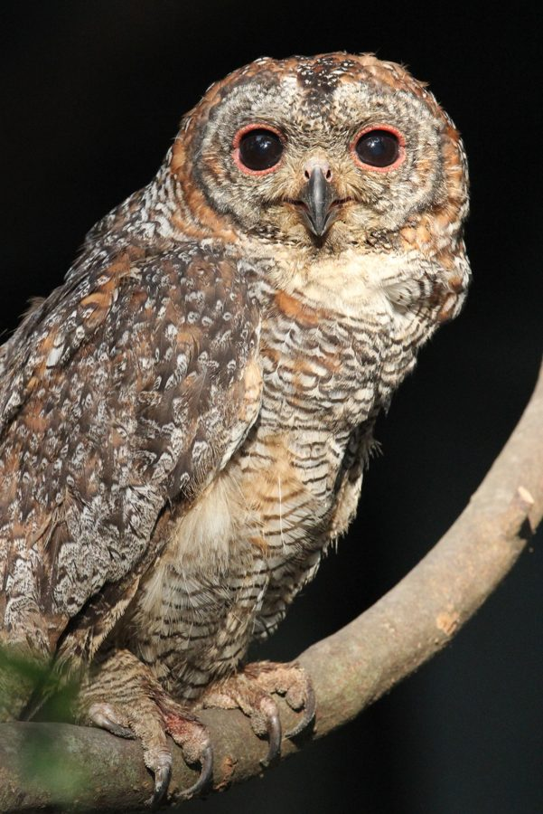

मॉटल्ड वुड आउलMottled Wood Owl
Strix ocellata · Strigidae · BRD-0163

- Scientific nameवैज्ञानिक नाम
- Strix ocellata (Lesson, 1831)
- Familyकुल
- Strigidae
- Hindiहिंदी
- मॉटल्ड वुड आउल
- Local namesस्थानीय नाम
- mottled wood owl, wood owl, ullu, mottled owl
- Status hereयहाँ की स्थिति
- native
- Movementआवागमन
- Resident, here all year
- IUCNIUCN
- LC
- Reviewसमीक्षा
- audited and independently read
When to look कब देखें
Present all year.साल भर मौजूद।
Uses and possibilities उपयोग और संभावनाएँ
Drawn from the documented uses in the profile below, where each is labelled traditional, current or a research lead. All uses →
Tell it apart from इनसे अलग पहचानें
मॉटल्ड वुड आउल / Mottled Wood Owl
Strix ocellata (Lesson, 1831) — Strigidae
मॉटल्ड वुड आउल — बस्ती-अयोध्या क्षेत्र का सबसे आम उल्लू, जो मोटे-मोटे जंगलों, बगीचों और मंदिरों के पेड़ों में रहता है। इसका रंग गहरा भूरा, धब्बेदार (mottled) होता है, जो पत्तों और शाखों में छुपा देता है। यह रात का शिकारी है, जो चूहों, कीटों और छोटे पक्षियों का शिकार करता है। इसकी आवाज़ एक तेज़ "हू-हू-हू" है, जो रात को सुनाई देती है। इसके बड़े गोल चेहरे और सीधी नज़र से इसे आसानी से पहचाना जा सकता है। यह उल्लू पेड़ों के कोटर में अंडे देता है।
Quick Identification त्वरित पहचान
| Feature | Description |
|---|---|
| Size | Medium-sized owl; 30–33 cm long |
| Plumage | Dark brown, heavily mottled and streaked with buff and grey |
| Head | Large, rounded, without ear tufts; facial disc whitish-buff |
| Eyes | Large, dark; forward-facing; provide stereoscopic vision |
| Facial markings | Concentric rings around eyes; mottled appearance aids camouflage |
| Bill | Relatively short, black, largely hidden in facial disc |
| Feet | Feathered up to the claws; pale yellow colour |
| Behaviour | Strictly nocturnal; roosts in trees during day; hunts from perches |
Field tip: A medium-sized, dark brown owl with a mottled appearance, often found perched on large trees in villages and gardens during the day. Hunts at night. Listen for deep "hoo-hoo-hoo" calls at dusk and night.
हिंदी — कैसे पहचानें:
गहरे भूरे रंग का, धब्बेदार उल्लू।
बड़ी गोल आँखें, रात को सक्रिय।
पेड़ों के कोटर में रहता है।
आवाज़: तेज़ "हू-हू-हू"।
Morphology आकारिकी
Biometrics:
| Measurement | Range |
|---|---|
| Total length | 300–330 mm |
| Wing | 230–250 mm |
| Tail | 130–150 mm |
| Bill | 20–25 mm |
Plumage: Overall colour dark brown to chocolate brown, heavily mottled and streaked with buff, grey, and cream. The mottling provides excellent camouflage in wooded habitats. Underparts paler, streaked with dark brown. Wing feathers (flight feathers) dark brown with barred patterns. Tail dark brown, barred and mottled.
Head: Large and rounded, lacking ear tufts. Facial disc relatively broad, whitish-buff with dark concentric rings around the eyes. The disc is not fully developed as in some owls but still prominent.
Eyes: Large, dark brown to black, forward-facing for stereoscopic vision. Provides excellent night vision but limits lateral vision.
Bill: Relatively short, black or dark horn-coloured, largely concealed by facial disc feathers.
Feet: Short and robust, feathered up to the claws. Claws sharp and black. Foot colour pale yellow.
Sexes: Females slightly larger than males; both sexes show similar plumage patterns.
Vocalisations. Call repertoire:
- Hoot call: A loud, distinctive "hoo-hoo-hoo" or "hoot-hoot-hoot", given from perches at dusk and throughout the night.
- Contact call: Softer hooting between pair members; given when birds are in proximity.
- Alarm call: Harsher, more rapid hooting when disturbed or defending territory.
हिंदी: रात को तेज़ "हू-हू" आवाज़। झगड़े और संपर्क में अलग-अलग आवाज़ें।
Behaviour & Ecology व्यवहार और पारिस्थितिकी
Nocturnal apex predator: The Mottled Wood Owl is one of the most common nocturnal raptors in eastern UP, hunting from dusk to dawn. They hunt from a stationary perch, watching the ground and surrounding vegetation for prey movement, then plunging down to capture prey.
Solitary and territorial: Pairs establish and defend territories, calling loudly at dusk to announce their presence. Territorial calls can be heard up to 1 km away.
Roosting behaviour: During the day, they roost in tree cavities, hollow branches, or dense foliage, where their mottled plumage provides camouflage. They are difficult to spot during the day.
Hunting technique: Sit-and-wait predator. Once prey is spotted, the owl uses silent flight (aided by soft feather edges) to approach and capture prey. Strong talons allow them to subdue prey up to their own size.
Social structure: Usually found in pairs within established territories. Monogamous; pairs may remain together for multiple breeding seasons.
Life Cycle / Phenology जीवन चक्र
| Stage / season | Event |
|---|---|
| November–February | Breeding season; pair bonding and territorial calling intensifies |
| February–March | Nest preparation; occupation of tree cavities |
| March–May | Egg-laying and incubation; clutch 2–4 eggs |
| May–July | Chicks fledge; dependent on parents for 4–6 weeks |
| July–October | Non-breeding; solitary hunting; juveniles disperse |
| Year-round | Resident; no seasonal migration |
Host Plants or Prey आहार
| Prey Type | Examples | % of Diet (estimated) | |
|---|---|---|---|
| Rodents | [[house_mouse\ | House mouse]], rats, shrews | 60% |
| Insects | Large beetles, crickets, grasshoppers | 20% | |
| Small birds | Sparrows, munias, warblers (at roosts) | 15% | |
| Frogs and lizards | Ground-dwelling species | 5% |
हिंदी: चूहों, कीटों और छोटी चिड़ियों का शिकारी। रात को शिकार करता है।
Predators / Natural Enemies शत्रु
- Avian predators: (takes chicks), martial eagles (rare in region)
- Mammalian predators: Occasionally wild boar, jackals (nest predation)
- Nest predators: Snakes (egg predators), occasionally crows
- Parasites: Avian malaria, helminths
हिंदी: बड़े शिकारी चिड़ियों का शिकार। घोंसलों में सांप।
Agricultural / Human Relevance कृषि प्रासंगिकता
Rodent control: The Mottled Wood Owl is an important natural pest control agent, preying heavily on rodent populations that damage stored grain and crops. A single pair may consume 1,000+ rodents annually.
Protected status: Protected under the Wildlife (Protection) Act, 1972 (Schedule IV). Killing or capturing is prohibited. However, habitat loss due to tree cutting and pesticide use (reducing insect prey) poses threats.
Persecution: Sometimes killed by farmers due to misidentification or superstitious beliefs, despite their ecological value.
Cultural significance: Owls feature prominently in Hindu and other mythologies; some communities revere them, others fear them.
Expected Locally स्थानीय रूप से अपेक्षित
Not a field record. Written from published accounts for eastern Uttar Pradesh. No confirmed local sighting yet — if you have seen it, that is what the atlas needs.
अभी तक स्थानीय पुष्टि नहीं। यह विवरण प्रकाशित स्रोतों से है, किसी अवलोकन से नहीं।
This species is NOT a field record. The distribution below is based on published sources describing where Mottled Wood Owls should be looked for in eastern Uttar Pradesh.
यह स्थानीय अवलोकन नहीं है। प्रकाशित स्रोतों पर आधारित।
Mottled Wood Owls are expected as year-round residents throughout Basti and Ayodhya districts, particularly in areas with deciduous forests, mango groves, and wooded villages. Listen for their loud "hoo-hoo-hoo" calls at dusk and night. They roost in tree cavities during the day and are difficult to locate unless you search large trees systematically. A first record should note location, date, time, and call characteristics, with audio recording if possible. Submit through the atlas About page.
Distribution वितरण
Global range: Indian subcontinent; found from the Himalayan foothills to southern India.
In India: Distributed throughout most of the country up to 2,000 m elevation.
In Uttar Pradesh: Common resident throughout the state, including plains and foothills.
In Basti district / eastern UP: Year-round resident; common in deciduous forests and mango groves; abundant in villages with large trees.
Research Questions शोध प्रश्न
- What is the density of Mottled Wood Owl populations in different habitat types (forest vs. mango groves vs. villages) in Basti?
- What is the specific diet composition of these owls, based on pellet analysis from known roost sites?
- How does pesticide use and reduced insect availability affect breeding success and chick survival?
- बस्ती के गाँवों में इस उल्लू की आवाज़ को सुनने के लिए सबसे अच्छा समय और स्थान कौन सा है?
- Can trained students create an acoustic monitoring program to track owl populations using nocturnal sound recordings?
- How do Mottled Wood Owls compete with and interact with other owl species in the region?
Similar Species मिलती-जुलती प्रजातियाँ
| Species | Key Difference | हिंदी | Field Rule | |
|---|---|---|---|---|
| [[spotted_owlet\ | Spotted Owlet]] (Athene brama) | Much smaller (20 cm); has distinct white spots on head and body; yellow eyes | धब्बेदार उल्लू | Spotted Owlet is tiny with obvious white spots. Mottled Wood Owl is medium-sized, dark, and less spotted. |
| [[brown_fish_owl\ | Brown Fish Owl]] (Ketupa zeylonensis) | Larger (47 cm); found near water; has ear tufts and orange-yellow eyes | मछली का शिकारी उल्लू | Brown Fish Owl is much larger, has ear tufts, and is found near rivers. Mottled is smaller, forest-based. |
| [[barn_owl\ | Barn Owl]] (Tyto alba) | Heart-shaped facial disc; pale golden-buff plumage; black eyes | घोंघा उल्लू | Barn Owl is pale and ghostly; Mottled is dark brown. Barn Owl has heart-shaped disc; Mottled has round disc. |
Field rule: A dark brown, medium-sized owl with deep "hoo-hoo-hoo" calls from wooded areas is a Mottled Wood Owl. Smaller owls with obvious spots are Spotted Owlets. Larger owls near water or with ear tufts are different species.
Taxonomy & Classification वर्गीकरण
Original description. The Mottled Wood Owl was first described by René-Primevère Lesson in 1831. Type locality is the Indian subcontinent. The genus Strix is a large group of wood owls distributed across the Northern Hemisphere and Africa.
Subspecies. Strix ocellata ocellata — the nominate subspecies found in India and throughout the range.
Family and order placement. Order Strigiformes; family Strigidae (typical owls). The genus Strix contains the "wood owls" and tawny owls of the Old World.
Phylogenetic notes. Strix ocellata is closely related to other Strix species, particularly the Ural Owl (S. uralensis) of northern regions. Molecular studies confirm placement within a clade of temperate and tropical wood owls.
IUCN status rationale. Listed as Least Concern (LC) due to wide range, stable populations, and adaptability to human-modified habitats. Not threatened by hunting or major habitat loss, though local declines have been documented where large trees are removed.
Photo Gallery फोटो गैलरी
No photos yet — add field photos to media/species/mottled_wood_owl/ and run node scripts/sync_photos.js.
Wanted photos:
- Owl roosting in tree cavity or dense foliage (daytime)
- Close-up of facial disc and eyes
- Owl in flight (difficult to capture)
- Typical habitat (mango grove or wooded area)
References संदर्भ
- Lesson, R. P. (1831). Traité d'Ornithologie. Levy Frères, Paris.
- Ali, S. & Ripley, S. D. (1968). Handbook of the Birds of India and Pakistan. Vol. 1 (Divers to Hawks). Oxford University Press, Delhi. Pp. 180–182.
- Grimmett, R., Inskipp, C. & Inskipp, T. (2011). Birds of the Indian Subcontinent (2nd edn). Oxford University Press, New Delhi. Pp. 230–231.
- König, C., Weick, F. & Becking, J. H. (1999). Owls: A Guide to the Owls of the World. Yale University Press, New Haven. Pp. 310–311.
- IUCN Red List (2023). Strix ocellata — BirdLife International assessment. Status: Least Concern.
- GBIF Occurrence Data — Strix ocellata, India (2026).
Source file: species/fauna/birds/mottled_wood_owl.md